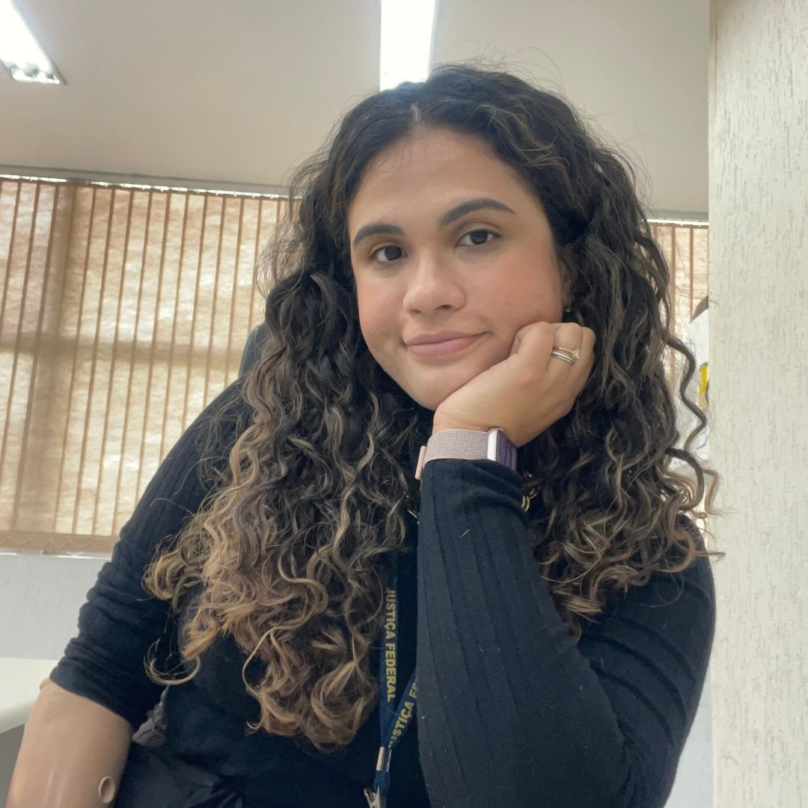
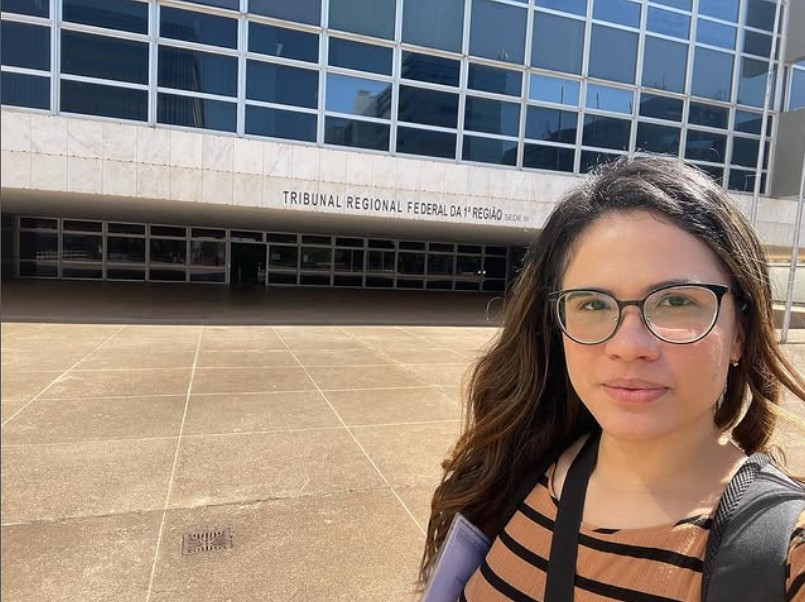
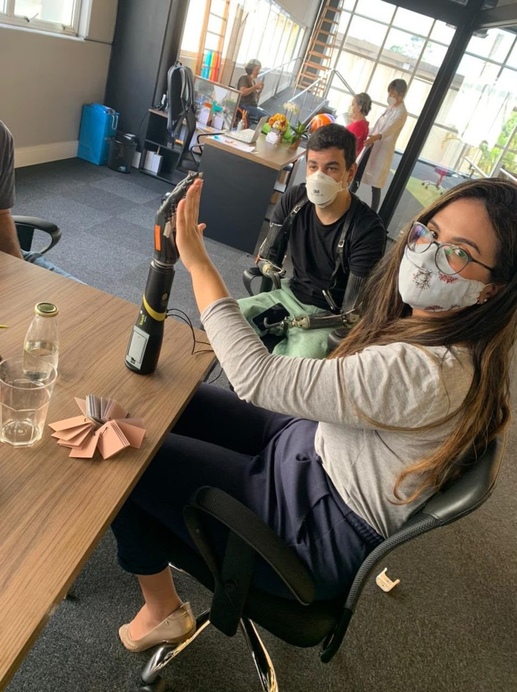
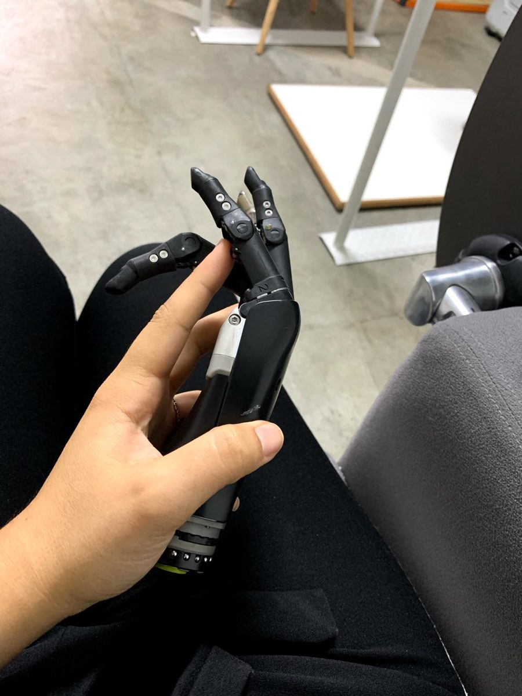
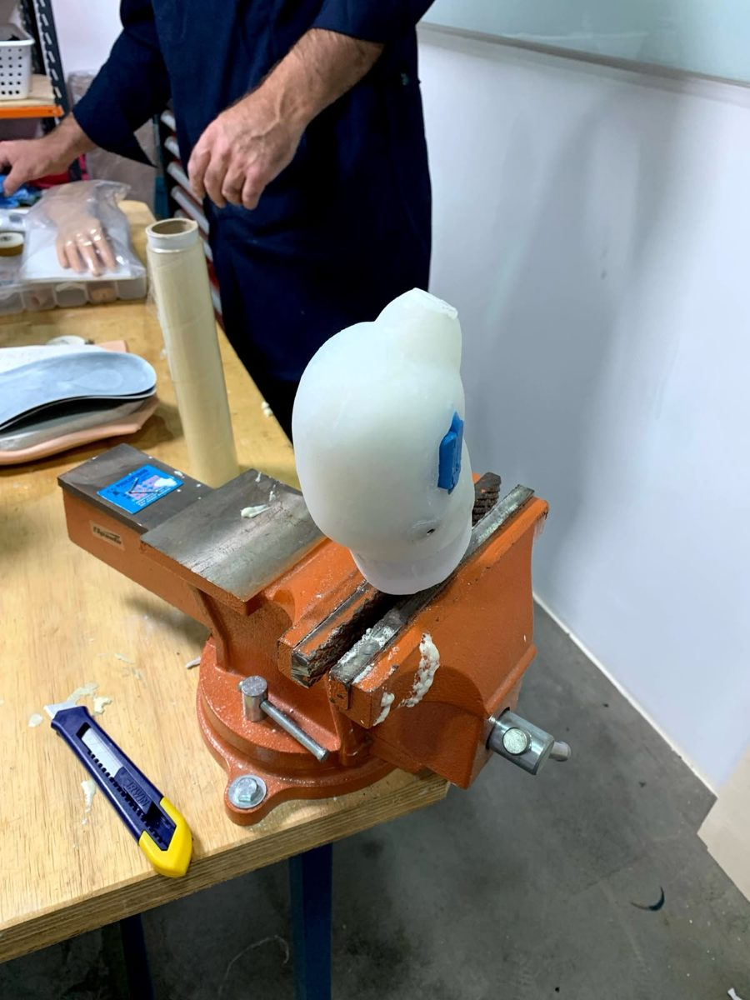
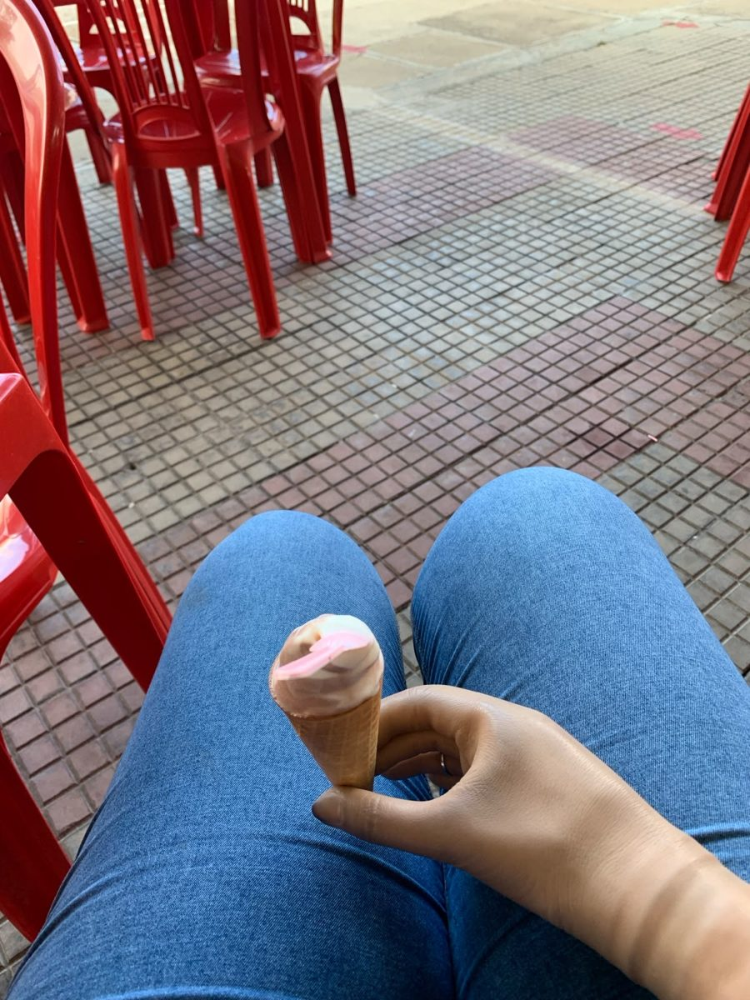

Informação acessível
Conteúdo em português sobre tecnologias ainda pouco conhecidas no Brasil.
Uma usuária brasileira de prótese, com deficiência congênita, acompanhando as tecnologias apresentadas na CR Expo China para documentar a experiência de uso, produzir conteúdo em português e aproximar a inovação internacional da comunidade brasileira de pessoas com deficiência.

Esta missão oferece a organizações parceiras algo raro no mercado brasileiro de tecnologia assistiva: a perspectiva de uma usuária real de prótese, capaz de experimentar soluções no contexto de uso, documentar essa experiência e traduzi-la de forma clara para o público brasileiro.
Tecnologia assistiva precisa ser apresentada também por quem a utiliza.
Tecnologias capazes de transformar a vida de pessoas com deficiência já existem. O problema é a distância entre essas soluções e quem precisa delas.
No Brasil, muitas tecnologias de próteses, mãos biônicas, sistemas mioelétricos e reabilitação ainda não têm distribuição ampla ou informação acessível em português produzida por usuários reais.
Esta missão busca reduzir essa distância.
Conteúdo em português sobre tecnologias ainda pouco conhecidas no Brasil.
Registro da perspectiva de quem utiliza prótese no cotidiano.
Aproximação entre fabricantes, inovação asiática e usuários brasileiros.

Pâmela Dayane Lima de Paula nasceu com ausência congênita do membro superior direito e teve acesso à sua primeira prótese aos 25 anos.
É advogada, analista judiciária federal e criadora do projeto @concurseirapcd, voltado a direitos, acessibilidade, preparação para concursos e autoestima de pessoas com deficiência.
Sua experiência mostrou que a barreira brasileira não é apenas de custo, mas também de informação.
Levei 25 anos para ter minha primeira prótese. Nenhum brasileiro deveria esperar tanto por informação.
Registros do processo de protetização da proponente e de avaliações de tecnologias de membro superior.




A Care & Rehabilitation Expo China é um dos principais eventos de tecnologia assistiva e reabilitação da Ásia, reunindo fabricantes, distribuidores, centros de pesquisa e soluções de inovação.
Grande concentração de fabricantes e componentes de tecnologia assistiva.
Desenvolvimento de mãos biônicas, próteses mioelétricas e sensores.
Tecnologias sem distribuição ou conteúdo acessível no mercado brasileiro.
Contato com soluções antes de chegarem à ponta da distribuição.
Documento estruturado com funcionalidades observadas, impressões de uso, pontos fortes e limitações percebidas.
Registros das soluções apresentadas durante a feira.
Conteúdo legendado em português, quando autorizado.
Publicações acessíveis e educativas.
Observações sobre tecnologias e soluções apresentadas.
Apresentação dos aprendizados no Brasil.
O material não constitui parecer técnico, certificação ou validação profissional de produtos. Trata-se de registro estruturado da experiência da usuária.
A missão pode ser conduzida por uma única organização parceira ou por um grupo de marcas de segmentos distintos.
Associação principal à missão, com possibilidade de exclusividade setorial e maior destaque institucional.
Apoio parcial com presença nos conteúdos e materiais.
Passagem, hospedagem, seguro, transporte, conectividade ou serviços.
Credenciamento, conexões com expositores, divulgação ou facilitação da participação.
As modalidades, contrapartidas e condições de parceria são apresentadas em proposta institucional específica.
Sua organização pode contribuir para aproximar a tecnologia assistiva desenvolvida na Ásia da comunidade brasileira de pessoas com deficiência, com conteúdo, experiência de uso e relacionamento institucional.
Preencha os campos abaixo. Retornarei com a proposta institucional adequada ao seu interesse.
Obrigada pelo interesse. Retornarei assim que possível.
Ocorreu um erro no envio. Tente novamente ou escreva para pamelaconcurseirapcd@gmail.com.